今天，指数虽然涨了，但两市近3500家下跌。
昨晚，龙版传媒被停牌，不光带崩了传媒板块，很多昨天涨停或大涨的其他板块票，今天很多也被核，整体还是非常难做！
盘面持续性最好的是农业和大消费，智能电网、航运、黄金等板块也有不俗表现。
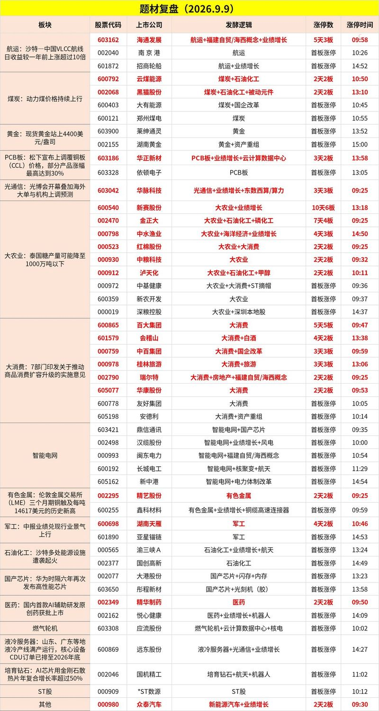
农业：
日本自10月起将进口小麦售价上调12%
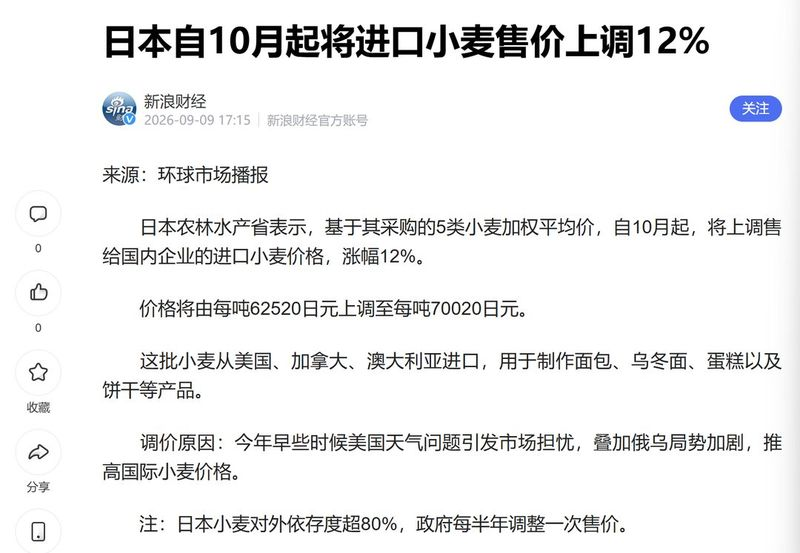
媒体：150年最强厄尔尼诺已出现 明年或爆发全球粮食危机
消费：
求是网盘后刊文：为何要做强国内大循环？
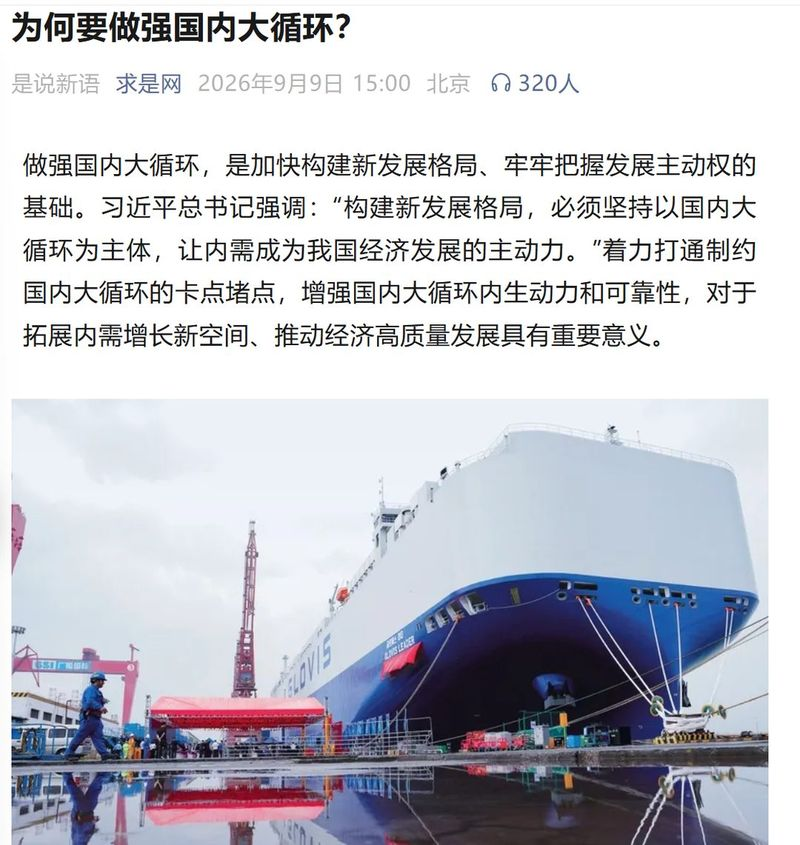
学习时报盘后刊文：何为“注意力经济”
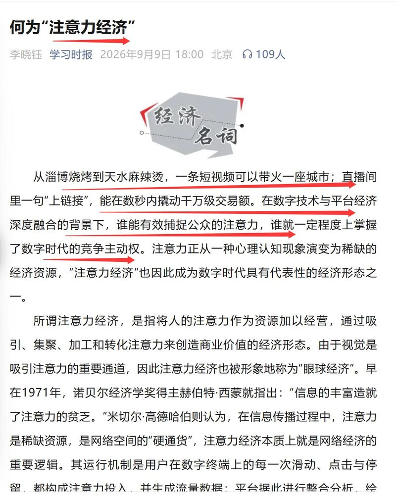
新华视评：让内功跟上热度，推动县域旅游做大做强
我国计划打造5000个全国放心消费集聚区
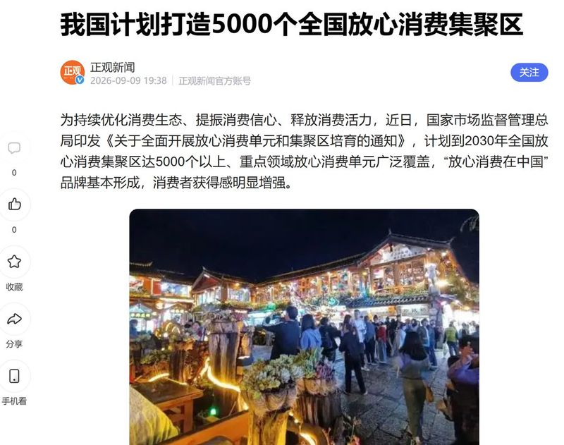
金融：
9月10日15:00国新办就金融领域贯彻落实“十五五”规划、推动金融强国建设有关情况举行新闻发布会
AI：
知情人士证实：DeepSeek备战科创板IPO，中信已入场尽调
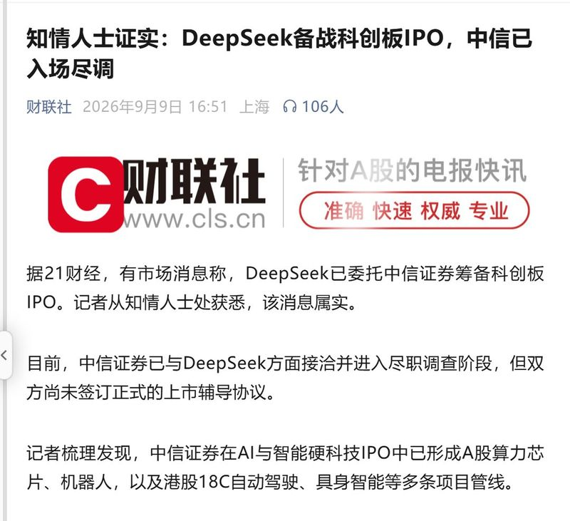
明日发布！DeepSeek V4.1 Flash来了
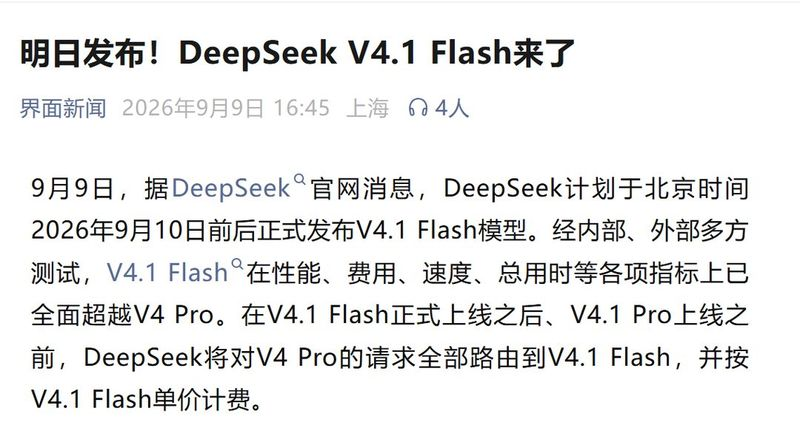
Meta推出首款个人智能体，C端真实任务执行成AI竞争新看点
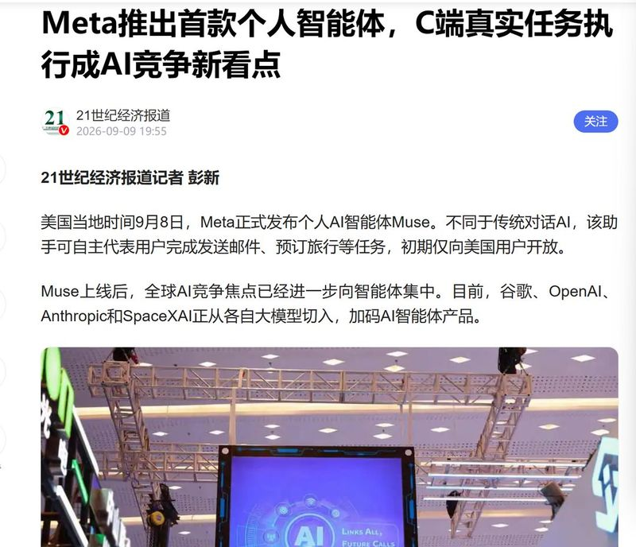
燧原科技：股票将于9月11日在科创板上市
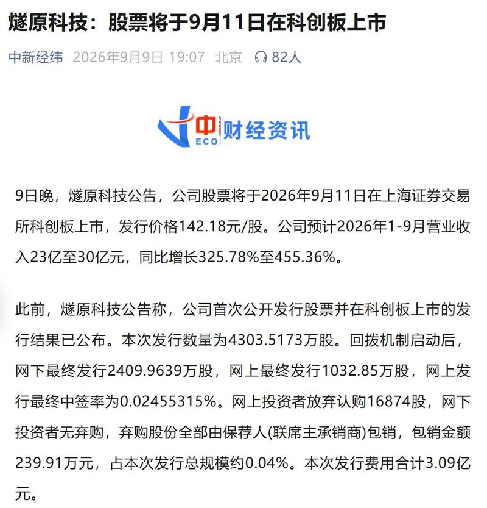
2026中国算力大会将于9月11日至13日在廊坊举行
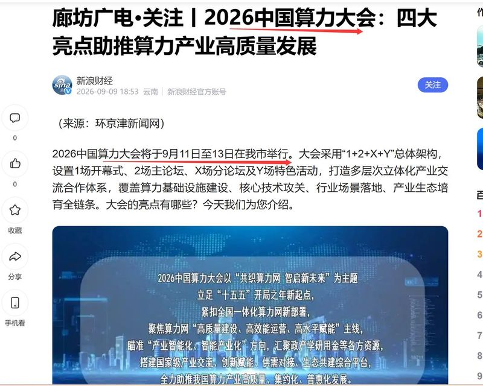
医药：
全球癌症病例2050年可能激增67%
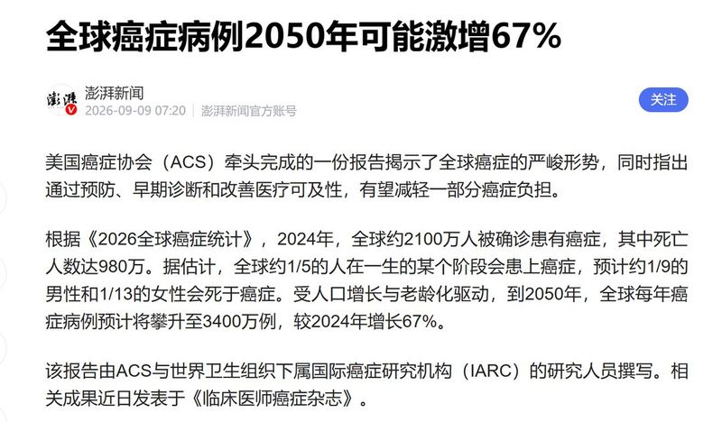
30元涨到800元！常用皮肤药膏上半年开始断货，公司回应：恢复时间未定
福建：
国台办：福建已实施206个闽台融合发展重点项目、总投资超1.3万亿元
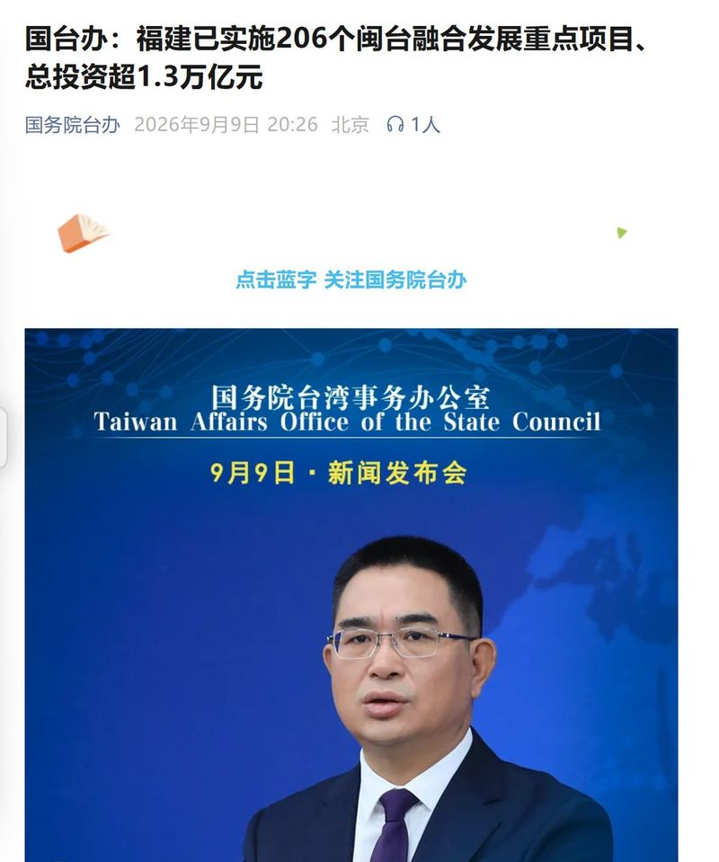
军工：
日美韩在东海举行“自由之刃”联合军演
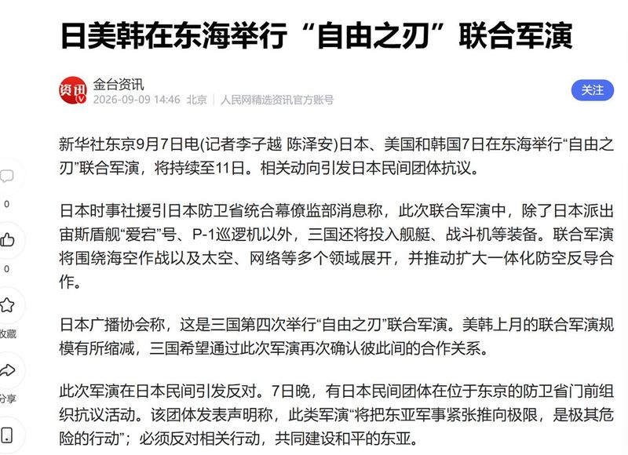
航行警告！黄海南部部分海域实弹射击
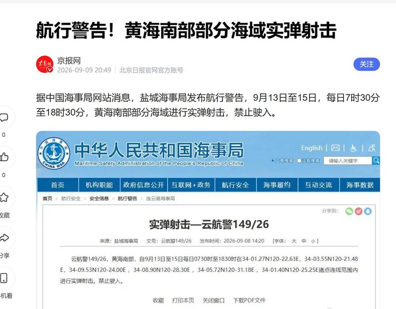
折叠屏：
关注今夜苹果折叠屏发布会有无超预期内容
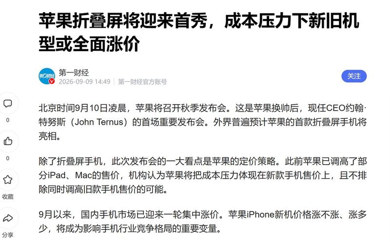